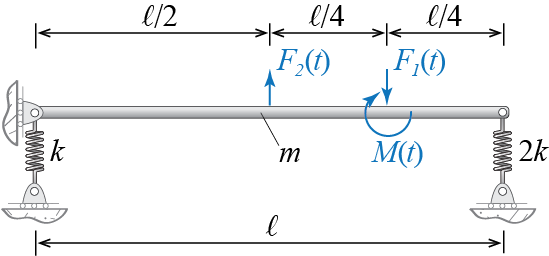

6 Models for Linear Multi Degree of Freedom Systems
When more than one but still a finite number of generalized coordinates are required to model the dynamics (inertial effects) of a system, the system is classified as multi degree of freedom (MDOF). Even locating a single particle may, in the most general case, require three coordinates when its motion is unconstrained. Unconstrained rigid bodies require six generalized coordinates, comprising generally the three coordinates of its center of mass and the body’s three rotations about the same point. The horizontal floor plate of a single-story structure, for example, may require three generalized coordinates as it translates and rotates in its own plane, when it is modeled as a rigid body and the vertical members are assumed axially rigid so that the motion of the floor plate is assumed to be restricted in the vertical direction. A simple but frequently employed model is that of a multi-story structure in which all floor plates are assumed to translate in only one horizontal direction, but the existence of multiple such stories requires as many coordinates as the number of floors to track each one.
The fundamental principles/laws that we use to derive the governing equations for multi degree of freedom systems are of course the same ones we have used heretofore. The difference is that now we will end up with multiple equations, as many as the number of degrees of freedom, which will be coupled through stiffness and/or inertia terms (or sometimes even through requirements regarding the distribution of damping). The solution of these equations will either require a direct numerical integration scheme, or an analytical approach (often coupled with a numerical scheme) in which an intermediary step will lead to uncoupling the governing equations and reduce the problem to solving for the response of a number of single degree of freedom systems.
In this chapter we limit our investigations solely to linear systems. The analysis of nonlinear MDOF systems is almost always conducted via numerical integration algorithms and contain additional complexities the introduction of which may wait until a thorough understanding of linear response is accomplished.
6.1 Equations of Motion in Matrix Form
To begin thinking about the equations that govern the dynamics of linear MDOF systems let’s first consider the simple case of a three degree of freedom system. A tinker toy model of a 3-DOF system is shown in Figure 6.1 a in which three point masses connected by springs and dashpots are allowed to move in one direction. Since the individual masses may move in differing amounts, we need to track the position of each separately. The positions of the masses \(m_1\), \(m_2\) and \(m_3\) are denoted by \(\gc_1\), \(\gc_2\) and \(\gc_3\), respectively, and these are the generalized coordinates of our model. External forces \(\extforce_1 (t)\), \(\extforce_2 (t)\) and \(\extforce_3 (t)\) may in general be imposed on the masses.
Since we have three distinct point masses, Newton’s second law may be applied to each individual mass separately, which will in turn yield the governing equation for that mass in terms of the generalized coordinates and system parameters. Since the motion of each mass is one dimensional, we may develop the equations using scalar analysis. To this end we first have to sketch the free body diagram of each mass at an instant at which all kinematic variables (displacements, velocities and accelerations) are positive valued to obtain algebraically consistent signs and implied directions. Such free body diagrams are shown in Figure 6.1 b in which all the masses are assumed to be in those states for which \(\gc_i > 0\), \(\dgc_i > 0\) and \(\ddgc_i > 0\). The directions of the forces, indicated by the arrowheads, are consistent with the assumed states and relative motions.
Considering the sum of forces for each particle, we deduce the following equations from the individual free body diagrams: \[ \extforce_1 + k_2(\gc_2 - \gc_1) + c_2 (\dgc_2 - \dgc_1) - c_1 \dgc_1 - k_1 \gc_1 = m_1 \ddgc_1 \] \[ \extforce_2 + k_3(\gc_3 - \gc_2) + c_3(\dgc_3 - \dgc_2) - k_2(\gc_2 - \gc_1) - c_2(\dgc_2 - \dgc_1) = m_2 \ddgc_2 \qquad(6.1)\] \[ \extforce_3 - k_3(\gc_3 - \gc_2) - c_3(\dgc_3 - \dgc_2)= m_3 \ddgc_3 \] Now it is important to note that these equations are coupled, meaning that the variables \(\gc_i\) and their time derivatives appear in multiple equations. If, for example, the first equation had only \(\gc_1\) and its time derivatives, the second \(\gc_2\) and its time derivatives, and the third \(\gc_3\) and its time derivatives, then we would have three uncoupled equations that govern the dynamics of three separate single degree of freedom systems. These systems would be able to move independently of what the others are doing. For our system, however, the equations are coupled in that, for example, to solve for \(\gc_1\) using the first equation we need to know \(\gc_2\) which also appears in that equation. The motions of the masses affect each other and their responses must be determined simultaneously. This is the major difficulty with analyses of MDOF systems.
A more general representation is possible if we choose to write these equations in matrix form. A simple rearrangement of terms leads to \[\begin{align*} \underbrace{\begin{bmatrix} m_1 & 0 & 0 \\ 0 & m_2 & 0 \\ 0 & 0 & m_3 \\ \end{bmatrix}}_{\mmat} \underbrace{\colmat{\ddgc_1 \\ \ddgc_2 \\ \ddgc_3}}_{\ddgcvec} & + \underbrace{\begin{bmatrix} c_1 + c_2 & -c_2 & 0 \\ -c_2 & c_2+c_3 & -c_3 \\ 0 &-c_3 & c_3 \end{bmatrix}}_{\cmat} \underbrace{\colmat{\dgc_1 \\ \dgc_2 \\ \dgc_3}}_{\dgcvec} + \\ & \underbrace{\begin{bmatrix} k_1 + k_2 & -k_2 & 0 \\ -k_2 & k_2+k_3 & -k_3 \\ 0 &-k_3 & k_3 \end{bmatrix}}_{\kmat} \underbrace{\colmat{\gc_1 \\ \gc_2 \\ \gc_3}}_{\gcvec}= \underbrace{\colmat{ \extforce_1 \\ \extforce_2 \\ \extforce_3}}_{\ldvec} \end{align*}\] In this representation, the accelerations are collected in the column matrix \(\ddgcvec\), the velocities in the column matrix \(\dgcvec\), and the displacements in the column matrix \(\gcvec\), all having dimensions of \(n \times 1\) with \(n\) being the number of degrees of freedom (\(n=3\) for our current example). The matrix \(\mmat\) that multiplies the accelerations \(\ddgcvec\) is called the mass matrix, the matrix \(\cmat\) that multiplies the velocities \(\dgcvec\) is called the damping matrix, and the matrix \(\kmat\) that multiplies the displacements/deformations \(\gcvec\) is called the stiffness matrix of the system. These are square matrices with dimensions equal to the number of degrees of freedom of the system (i.e., \(n \times n\), with \(n=3\) for our example). The column matrix \(\ldvec\) appearing on the right hand side of the equation comprises the external forces. \(\ldvec\) also has dimensions \(n \times 1\) and, for ease of reference, it is often called the external force vector or the load vector. With these definitions, the equations of motion for our example may now be stated as \[ \mmat \ddgctvec + \cmat \dgctvec + \kmat \gctvec = \ldtvec \qquad(6.2)\] and, more importantly, the equations of motion for any linear MDOF system will be given by this matrix expression. For different systems the sizes of matrices will differ, the coefficients in the matrices will differ, but once the equations are written in matrix form, they will be identical to the expression that we see in Equation 6.2. If the system is undamped, then its equations of motion will be given by \[ \mmat \ddgctvec + \kmat \gctvec = \ldtvec \] and if this undamped system is undergoing free vibrations, then the equations of motion will be given by \[ \mmat \ddgctvec + \kmat \gctvec = \zerocol \] where \(\zerocol\) denotes a column matrix, of dimensions \(n \times 1\), whose elements are all equal to zero. Clearly both of these equations may be derived from Equation 6.2 by enforcing \(\cmat = \zeromat\) and/or \(\ldvec = \zerocol\); \(\zeromat\) is the zero matrix, of dimensions \(n \times n\), with all of its elements equal to zero.
It is therefore of utmost importance to develop solution strategies that will directly deal with the matrix form of equations so that such strategies will be applicable to all linear MDOF systems. To solve the matrix equation of motion means to find \[ \gctvec = \colmat{ \gc_1(t) \\ \gc_2(t) \\ \gc_3(t) \\ } \qquad(6.3)\] for all relevant time instances \(t\). This solution must satisfy the equilibrium condition specified by Equation 6.2 at all times and furthermore it must also satisfy the initial conditions \(\gcvec (0)\) and \(\dgcvec (0)\).
6.2 Symmetry of System Matrices
To introduce some additional concepts and details, let us consider as a second example the simple rigid bar shown in Figure 6.2. In order to simplify the problem, we will assume that horizontal motion of the bar is negligible. Any horizontal forces, including those that are associated with the rotation of the bar, will remain so small that they may be neglected. This assumption also implies that vertical motion, although not negligible, also remains relatively small such that circular arcs may be approximated by tangent lines and angles by their tangents. With these approximations the problem is drastically simplified but consequently, at least in principle, the analyses are limited to immediate vicinity of the initial equilibrium configuration. Gravity is assumed to play no role in this particular problem.

The first order of business is to determine the generalized coordinates to be employed in the analysis. One way to think about the problem is to visualize the possible motion of the bar and identify possible candidates with which this motion may be described. As the bar is said to be rigid, this particular problem essentially boils down to choosing variables to describe a straight line. Furthermore, since the parts of the bar is assumed to move vertically, knowing the vertical positions of any two points on this straight line suffices to sketch the line. The system therefore has only two degrees of freedom in that once any two points on the bar are located at any instant, the positions of all its other parts may be determined in relation to those two points. One could also choose to identify the orientation of the bar through the angle it makes with the horizontal, so that knowing the vertical translation of any point on the bar and the rotation of the bar about that point also suffices to sketch the current spatial configuration of the whole bar. There is therefore an infinite number of choices that we may use as our generalized coordinates, three sets of which are shown in Figure 6.3. The sketches shown in the figure greatly exaggerate the displacements for visual purposes and they clearly do not conform to our stated assumptions of small amplitude motions, hence they should be regarded with care. So which choice shall we proceed with? Some choices may lead to simpler structures in the system matrices but it is somewhat early to introduce these investigations and therefore we postpone relevant discussions to after our initial analyses.
For no particular reason, let us choose as our generalized coordinates the vertical translations of the two ends of the bar as shown in Figure 6.4 wherein the top sketch shows the kinematic variables and the bottom figure shown the free body diagram of the bar. Here we have to note some issues which follow from our initial assumption of small displacements. The location of any point on the bar should in general be specified via the coordinate \(s'\), which denotes a positional variable in the deformed configuration. Since, however, the vertical displacements are assumed to be small and the horizontal displacements (and velocities and accelerations) are assumed to be comparatively negligible, we may instead use the horizontal position variable \(s\) since by assumption \(s \approx s'\). The vertical position \(\gc (s,t)\) of the piece of the bar located at \(s\) at time \(t\) is given by \[ \gc (s,t) = \gc_1 (t) + \ratio{s}{\ell} (\gc_2 (t) - \gc_1 (t)) \] and the vertical velocity of that same piece is \[ \dgc (s,t) = \dgc_1 (t) + \ratio{s}{\ell} (\dgc_2 (t) - \dgc_1 (t)) \qquad(6.4)\] Let us first use the Newton-Euler approach to derive the governing equations of motion. To this end we have to calculate the linear and angular momenta (about the center of mass), take their time derivatives, and equate these time derivatives to the sums of external forces and moments, i.e. \[ \dlinmom = \fvec, \quad \dangmom{\com} = \moment{\com} \]
If the bar is homogeneous, its center of mass is located at \(s = \ell/2\), and the mass of an infinitesimal segment of width \(\diff s\) is given by \((m / \ell) \diff s\). The vertical linear momentum of this infinitesimal piece given by the product of its mass and its vertical velocity so that when the piece is located at \(s\), its vertical linear momentum is \[ \left[\left(\frac{m}{\ell}\right)\diff s\right]\left[\dgc_1 (t) + \ratio{s}{\ell} (\dgc_2 (t) - \dgc_1 (t))\right] \] and the vertical linear momentum of the whole bar is therefore given by \[ \int_{0}^{\ell} \left(\frac{m}{\ell}\right)\left[\dgc_1 (t) + \ratio{s}{\ell} (\dgc_2 (t) - \dgc_1 (t))\right]\diff s = m \left(\ratio{\dgc_1 + \dgc_2}{2} \right) \] which of course is equal to the total mass of the bar times the vertical velocity of its center of mass.1 Since the time derivative of the vertical linear momentum is equal to the resultant of the external forces we have, from the free body diagram in Figure 6.4, \[ m \left(\ratio{\ddgc_1 + \ddgc_2}{2} \right) = - k \gc_1 - 2k\gc_2 - \sforce_1 + \sforce_2 \] which, after rearranging, may be written as \[ \ratio{m}{2} \ddgc_1 + \ratio{m}{2} \ddgc_2 + k \gc_1 + 2k\gc_2 = \sforce_2 - \sforce_1 \qquad(6.5)\] To derive the expression for angular momentum about the center of mass, we note that the position of the infinitesimal segment with respect to the center of mass is given by \(s-\ell/2\). Note that angular momentum is a vectorial quantity given by an expression of the sort \(\pvec \times \linmom\) (i.e. position times linear momentum): for the infinitesimal segment to the right of the center of mass the position variable is positive, its velocity (and hence its linear momentum) is positive if it is upward, and their vectorial product yields a vector perpendicular to the plane of the bar with the sense given by the right hand rule (i.e. positive when out of the screen or page on which you are reading this text). The scalar component of the angular momentum for the infinitesimal piece is therefore given by \[ \left[s-\frac{\ell}{2}\right]\left[\left(\frac{m}{\ell}\right)\diff s\right]\left[\dgc_1 (t) + \ratio{s}{\ell} (\dgc_2 (t) - \dgc_1 (t))\right] \] and the angular momentum of the whole bar about its center of mass is \[ \int_{0}^{\ell} \left(\frac{m}{\ell}\right)\left[s-\frac{\ell}{2}\right]\left[\dgc_1 (t) + \ratio{s}{\ell} (\dgc_2 (t) - \dgc_1 (t))\right]\diff s = \ratio{m \ell}{12} \left(\dgc_2 - \dgc_1\right) \] which, of course, is equal to the product of the bar’s moment of inertia about its center of mass (i.e. \(m \ell^2 / 12\)) and its angular velocity (i.e. \((\dgc_2 - \dgc_1)/\ell\)). As the time derivative of this angular momentum should be equal to the resultant moment of the external forces and moments about the center of mass, we have, based on the free body diagram in Figure 6.4, \[ \ratio{m \ell}{12} \left(\ddgc_2 - \ddgc_1\right) = \ratio{k \ell}{2} \gc_1 - \ratio{2 k \ell}{2} \gc_2 - \ratio{\ell}{4} \sforce_1 - \smoment \] which could be rewritten as \[ - \ratio{m \ell}{12} \ddgc_1 + \ratio{m \ell}{12} \ddgc_2 - \ratio{k \ell}{2} \gc_1 + k \ell \gc_2 = - (\ratio{\ell}{4} \sforce_1 + \smoment) \qquad(6.6)\] When the two equations derived from linear and angular momenta are written in matrix form one gets \[ \begin{bmatrix} \ratio{m}{2} & \ratio{m}{2} \\ -\ratio{m \ell}{12} & \ratio{m \ell}{12} \end{bmatrix} \colmat{\ddgc_1 \\\ddgc_2} + \begin{bmatrix} k & 2k \\ - \ratio{k \ell}{2} & k \ell \end{bmatrix} \colmat{\gc_1 \\ \gc_2} = \colmat{\sforce_2 - \sforce_1 \\ - \ratio{\sforce_1 \ell}{4} - \smoment} \qquad(6.7)\] These equations are perfectly fine in terms of representing the dynamics, but the coefficient matrices are not symmetric as were those of the 3-DOF model discussed previously. Symmetry is a desirable property for computational purposes and it follows naturally if certain physical expectations (such as Betti’s law of reciprocity for example) are accounted for. One drawback about the Newton-Euler approach for MDOF systems is that the symmetry of the coefficient matrices is not guaranteed when an arbitrary set of generalized coordinates are employed. It should be mentioned that if, for example, we were to use the vertical translation of the center of mass of the bar and its rotation about that point as our generalized coordinates, we would end up with symmetric coefficient matrices with the Newton-Euler approach.
The Lagrangian approach, on the other hand, ensures symmetry naturally for all choices of generalized coordinates. To exemplify this statement, let us use the same two coordinates \(\gc_1\) and \(\gc_2\) shown in Figure 6.4, and this time use Lagrange’s equations. The velocity of an infinitesimal segment of the bar is given by the expression in Equation 6.4 so that the kinetic energy of the bar is: \[ \ke = \int \frac{1}{2} \dgc^2 \dm = \int_{0}{\ell} \frac{1}{2} \left[\dgc_1 + \frac{s}{\ell} (\dgc_2 - \dgc_1)\right]^2 \frac{m}{\ell}\diff s = \frac{m}{6} \left[\dgc_1^2 + \dgc_2^2 + \dgc_1 \dgc_2\right] \] This form of the kinetic energy is representative of most systems and in the most general case one may expect to have a kinetic energy function of the form2 \[ \ke = \ke(\{\gc\},\{\dgc\},t) = \ratio{1}{2} \sum_{i}\sum_{j} m_{ij}(\{\gc\},t) \dgc_i \dgc_j + \sum_{i} \widehat{m}_{i}(\{\gc\},\,t) \dgc_i + \widehat{m}_o(\{\gc\},t) \] where \(\{\gc\}\) denotes the set of generalized coordinates used for the system and \(\{\dgc\}\) denotes the set of generalized velocities, with the summations over all generalized coordinates. The coefficients themselves may be functions of generalized coordinates and time so that \(m_{ij}=m_{ij}(\{\gc\},t)\), \(\widehat{m}_{i} = \widehat{m}_{i}(\{\gc\},\,t)\), and \(\widehat{m}_o =\widehat{m}_o(\{\gc\},t)\). Whenever time does not explicitly appear in the relations the last two terms disappear and the kinetic energy becomes a homogeneous quadratic form of the generalized velocities as \[ \ke = \ke(\{\gc\},\{\dgc\}) = \ratio{1}{2} \sum_{i}\sum_{j} m_{ij}(\{\gc\}) \dgc_i \dgc_j \] and it may be shown that the coefficients are such that \(m_{ij} = m_{ji}\) for all \(i,j\). Furthermore, when we consider small oscillations around the equilibrium configuration, these coefficients cease to depend explicitly on generalized coordinates so that \[ \ke(\{\dgc\}) = \ratio{1}{2} \sum_{i}\sum_{j} m_{ij} \dgc_i \dgc_j \] with \(m_{ij} = m_{ji}\), given by: \[ m_{ij} = \ratio{\partial^2 \ke}{\partial \dgc_i \partial \dgc_j} \qquad(6.8)\] In this case the kinetic energy of the system may be expressed using matrix notation as \[ \ke = \ratio{1}{2} \dgcvec^T \mmat \dgcvec \qquad(6.9)\] where, for an n-DOF system, \[ \mmat = \begin{bmatrix} m_{11} & m_{12} & \cdots & m_{1n} \\ m_{21} & m_{22} & \cdots & m_{2n} \\ \vdots & \vdots & \ddots & \vdots \\ m_{n1} & m_{n2} & \cdots & m_{nn} \end{bmatrix} \quad \text{and} \quad \dgcvec = \colmat{\dgc_1 \\ \dgc_2 \\ \vdots \\ \dgc_n} \] The potential energy of the system of Figure 6.2 comprises the energy stored in the two springs so that we have \[ \pe = \frac{1}{2} k \gc_1^2 + \frac{1}{2} 2k \gc_2^2 \] The potential function may in general depend on generalized coordinates and time, i.e. we may have to deal with a function \(\pe = \pe(\{\gc\},t)\). Most often this function does not explicitly depend on time. Moreover, when we consider small oscillations around the equilibrium configuration, it may be shown that the potential energy has the form \[ \pe = \pe(\{\gc\}) = \frac{1}{2} \sum_{i} \sum_{j} k_{ij} \gc_i \gc_j \] where the coefficients do not explicitly deped on generalized coordinates, and that they are given by \[ k_{ij} = \ratio{\partial^2 \pe}{\partial \gc_i \partial \gc_j} \qquad(6.10)\] such that \(k_{ij}=k_{ji}\) for all \(i,j\). In this case the potential energy of the system may be expressed using matrix notation \[ \pe = \ratio{1}{2} \gcvec^T \kmat \gcvec \qquad(6.11)\] where, for an n-DOF system, \[ \kmat = \begin{bmatrix} k_{11} & k_{12} & \cdots & k_{1n} \\ k_{21} & k_{22} & \cdots & k_{2n} \\ \vdots & \vdots & \ddots & \vdots \\ k_{n1} & k_{n2} & \cdots & k_{nn} \end{bmatrix} \quad \text{and} \quad \gcvec = \colmat{\gc_1 \\ \gc_2 \\ \vdots \\ \gc_n} \]
The last step before we write Lagrange’s equations is identifying the generalized forces. Recall that the generalized forces are the coefficients in the virtual work expression when arbitrary virtual variations of the generalized coordinates are considered. Considering the external forces \(\sforce_1\), \(\sforce_2\) and \(\smoment\) shown in the free body diagram in Figure 6.4 and imposing virtual displacements \(\virt \gc_1\) and \(\virt \gc_2\) shown in Figure 6.5, the virtual work done by the external forces3 as the system goes through these virtual displacements is given by \[ \ratio{\virt \gc_1}{2} F_2 - \ratio{\virt \gc_1}{4} F_1 + \ratio{\virt \gc_1 - \virt \gc_2}{\ell} \smoment - \ratio{3 \virt \gc_2}{4} F_1 + \ratio{\virt \gc_2}{2} F_2 = \vforce_1 \virt \gc_1 + \vforce_2 \virt \gc_2 \] so that the generalized forces are identified as the coefficients of the virtual displacements as \[ \vforce_1 = \ratio{1}{2} F_2 - \ratio{1}{4} F_1 + \ratio{1}{\ell} \smoment, \qquad \vforce_2 = \ratio{1}{2} F_2 - \ratio{3}{4} F_1 - \ratio{1}{\ell} \smoment \] Now we are ready to derive the governing equations for our model. Lagrange’s equations specify that for our 2-DOF system, \[ \frac{\diff}{\diff t} \left(\frac{\partial \ke}{\partial \dgc_{i}}\right) - \frac{\partial \ke}{\partial \gc_{i}} + \frac{\partial \pe}{\partial \gc_{i}} = \vforce_i \qquad \text{for} \quad i=1,2 \qquad(6.12)\] Substituting the energy expressions and evaluating the derivatives lead to \[ \ratio{m}{3} \ddgc_1 + \ratio{m}{6} \ddgc_2 + k \gc_1 = \ratio{1}{2} F_2 - \ratio{1}{4} F_1 + \ratio{1}{\ell} \smoment \qquad(6.13)\] and \[ \ratio{m}{6} \ddgc_1 + \ratio{m}{3} \ddgc_2 + 2k \gc_2 = \ratio{1}{2} F_2 - \ratio{3}{4} F_1 - \ratio{1}{\ell} \smoment \qquad(6.14)\] which may be combined into a single matrix equation as follows: \[ \begin{bmatrix} \ratio{m}{3} & \ratio{m}{6} \\ \ratio{m}{6} & \ratio{m}{3} \end{bmatrix} \colmat{\ddgc_1 \\\ddgc_2} + \begin{bmatrix} k & 0 \\ 0 & 2k \end{bmatrix} \colmat{\gc_1 \\ \gc_2} = \colmat{\ratio{1}{2} F_2 - \ratio{1}{4} F_1 + \ratio{1}{\ell} \smoment \\ \ratio{1}{2} F_2 - \ratio{3}{4} F_1 - \ratio{1}{\ell}\smoment} \qquad(6.15)\] So how is it that we come up with two different equations that govern the same set of generalized coordinates; in other words, can Equation 6.7 and Equation 6.15 both be valid? These two sets of equations are indeed interrelated as one set is a linear combination of the other (e.g. simple addition of Equation 6.12 and Equation 6.13 leads to Equation 6.5). As we have the possibility of obtaining symmetric coefficient matrices by a choice of method or coordinates in all cases, we will always assume that the mass and the stiffness (and eventually also the damping) matrices are symmetric, and develop solution strategies accordingly.
When discussing linear and angular momenta, we could of course have directly used the particular results pertaining to rigid bodies but instead we choose to start from fundamental principles in this introductory example in an effort to emphasize their importance. Experienced readers may skip the details and choose to focus on the familiar conclusions.↩︎
Subtle details regarding Lagrange’s equations are too many to discuss in detail in this text. For a thorough introduction and much more, see e.g. D.T. Greenwood, Classical Dynamics, Dover Publications, 1997.↩︎
The spring forces have already been accounted for in the potential energy and so they are not included in the work calculation regarding external forces.↩︎
6.3 Stiffness and Inertia Influence Coefficients
6.3.1 Force Equilibrium
A more direct way to derive the coefficient matrices is often employed in structural dynamics due to its algorithmic nature. This approach addresses the matrix form of equations, given by \[ \mmat \ddgcvec + \kmat \gcvec = \ldvec \] as the force summation equation that it is, in the form \[ \intf + \stff = \ldvec \] where the components of \[ \intf = \mmat \ddgcvec \] are called the inertia forces and the components of \[ \stff = \kmat \gcvec \] are called the elastic forces. Note that both the inertia and the elastic forces are generated by motion. Since for small amplitude motion the coefficients in the mass and stiffness matrices do not explicitly depend on generalized coordinates, these terms may be thought of as independent quantities in that it may be possible to discuss them separately.
Let us start with the elastic forces term. As the force equilibrium equation has to be valid whenever the accelerations are zero too, the stiffness related term may be determined by the well-known methods of structural analysis, e.g. the direct displacement method. In this case the force equilibrium equation would read \[ \stff = \kmat \gcvec = \begin{bmatrix} k_{11} & k_{12} & \cdots & k_{1n} \\ k_{21} & k_{22} & \cdots & k_{2n} \\ \vdots & \vdots & \ddots & \vdots \\ k_{n1} & k_{n2} & \cdots & k_{nn} \end{bmatrix} \colmat{\gc_1 \\ \gc_2 \\ \vdots \\ \gc_n}= \ldvec = \colmat{\extforce_1 \\ \extforce_2 \\ \vdots \\ \extforce_n} \] where \(k_{ij}\) are called the stiffness influence coefficients. Now consider a particular case with a small displacement \(\gc_1 > 0\) while all other displacements are kept at zero (remember that accelerations were already assumed zero). In this particular case, the external forces and moments (depending on whether the DOF is translational of rotational) that have to be applied along the generalized coordinates for equilibrium of the system have to be equal to \[ \colmat{k_{11} \gc_1 \\ k_{21} \gc_1 \\ \vdots \\ k_{n1} \gc_1} = \colmat{\extforce_1 \\ \extforce_2 \\ \vdots \\ \extforce_n} \] which means we must apply a force equal to \(k_{11} \gc_1\) along generalized coordinate 1, \(k_{21} \gc_1\) along generalized coordinate 2, etc. If the displacement imposed on generalized coordinate 1 is assumed to be equal to unity, then the forces are numerically given simply by the stiffness influence coefficients. This whole discussion may be extended to any coordinate in that we could assume \(\gc_j =1\) while all other generalized coordinates take on a value of zero; the forces that must be applied are then given by \(k_{1j} \gc_j = k_{1j}\), \(k_{2j} \gc_j = k_{2j}\) etc. Based on this pattern, the following phrasing is often used in defining the stiffness influence coefficients: ``The stiffness coefficient \(k_{ij}\) is numerically equal to the force/moment that must be applied along generalized coordinate \(i\) while the system is in static equilibrium when the imposed displacements are such that \(\gc_j = 1\) and all other displacements (and accelerations and velocities) are zero.’’ Note that this is somewhat reverse thinking: we are not trying to find the displacements that would be observed under a specific set of external effects and so the actual set of external forces acting on the system are irrelevant for this particular analysis; on the contrary, we are trying to figure out what external forces/moments should be applied to impose a certain displacement pattern. Even though this may seem somewhat peculiar, it actually provides a systematic way to evaluate the stiffness influence coefficients, one column at a time. Consider the rigid bar example of Figure 6.2, with the generalized coordinates shown in Figure 6.4 selected to model our problem. By imposing the displacement patterns \[ \left\{\gc_1 > 0, \gc_2 = 0\right\} \quad \text{and} \quad \left\{\gc_1 = 0, \gc_2 > 0\right\} \] one at a time in a successive fashion, we obtain the free body diagrams shown in Figure 6.6.
Static equilibrium demands that the forces shown in these free body diagrams be given by \[ k_{11} \gc_1 = k \gc_1, \quad k_{21} \gc_1 = 0, \quad k_{22} \gc_2 = 2k \gc_2, \quad k_{12} \gc_2 = 0 \] from which it could be deduced that: \[ k_{11} = k, \quad k_{22} = 2k, \quad k_{12}=k_{21} = 0 \]
A similar analysis could be employed in discussing the coefficients in the mass matrix. To this end we need to include d’Alembert forces in our free body diagrams to discuss ‘static’ equilibrium, and consider what happens when some acceleration is present at a generalized coordinate while all other generalized coordinates have zero accelerations. At the same time we assume that the displacements at the generalized coordinates are zero (as well as velocities, which will be important when discussing damping). When the generalized coordinates take on values of zero, the force equilibrium equation yields \[ \intf = \mmat \ddgcvec = \begin{bmatrix} m_{11} & m_{12} & \cdots & m_{1n} \\ m_{21} & m_{22} & \cdots & m_{2n} \\ \vdots & \vdots & \ddots & \vdots \\ m_{n1} & m_{n2} & \cdots & m_{nn} \end{bmatrix} \colmat{\ddgc_1 \\ \ddgc_2 \\ \vdots \\ \ddgc_n}= \ldvec = \colmat{\extforce_1 \\ \extforce_2 \\ \vdots \\ \extforce_n} \] and furthermore, if \(\ddgc_j > 0\) while all other \(\ddgc_i = 0\) for \(i \neq j\), the force equilibrium demands \[ \colmat{m_{1j} \ddgc_j \\ m_{2j} \ddgc_j \\ \vdots \\ m_{nj} \ddgc_j} = \colmat{\extforce_1 \\ \extforce_2 \\ \vdots \\ \extforce_n} \qquad(6.16)\] which means that if static equilibrium is to be satisfied under these conditions, then forces equal to \(m_{ij} \ddgc_j\) must be applied externally along generalized coordinates \(\gc_i\). Similar to the stiffness case, we can apply such distributions successively and one at a time to all the generalized coordinates, sketch free body diagrams including d’Alembert forces and those forces that must be applied externally as per Equation 6.16, and use ‘static’ equilibrium requirements to determine the unknown coefficients.
Going back to our rigid bar, the free body diagrams including d’Alembert forces for cases \[ \left\{\ddgc_1 > 0, \ddgc_2 = 0\right\} \quad \text{and} \quad \left\{\ddgc_1 = 0, \ddgc_2 > 0\right\} \] when all other displacements (and velocities) are zero are shown in Figure 6.7.
Equilibrium demands balance of forces and balance of moments so that \[ \begin{array}{c} m_{11} \ddgc_1 + m_{21} \ddgc_1 - \ratio{1}{2}\ratio{m}{\ell}\ddgc_1 \ell = 0, \quad \ell m_{11} \ddgc_1 - \ratio{2 \ell}{3} \ratio{1}{2}\ratio{m}{\ell}\ddgc_1 \ell = 0 \\ m_{12} \ddgc_2 + m_{22} \ddgc_2 - \ratio{1}{2}\ratio{m}{\ell}\ddgc_2 \ell = 0, \quad \ell m_{22} \ddgc_2 - \ratio{2 \ell}{3} \ratio{1}{2}\ratio{m}{\ell}\ddgc_2 \ell = 0 \end{array} \] from which we deduce \[ m_{11} = m_{22} = \ratio{m}{3}, \quad m_{12}=m_{21} = \ratio{m}{6} \]
6.3.2 Equivalent Forces and Virtual Work
The approach discussed above could very well be cast into a question of equivalence as opposed to equilibrium, and its implicit connection to the principle of virtual work would be more directly evident. The underlying point is replacing d’Alembert forces, elastic forces and external forces, which may in general be distributed over the whole system, with equivalent sets of force systems applied along the generalized coordinates. This is an approach which structural engineers are familiar with as it is the framework within which displacement methods operate in structural analysis. While discussing equivalence, d’Alembert forces and elastic forces (and eventually damping related forces) should be explicitly accounted for as resisting forces in that they occur in opposing directions to the directions of accelerations and displacements (and velocities), respectively. This sense of direction must be taken into consideration while setting up the equivalent systems of forces. Consider again the rigid bar, and assume that we are trying to calculate the coefficients in the mass matrix. The d’Alembert forces acting on the bar and an equivalent set of forces acting along the generalized coordinates are shown in Figure 6.8. Note that we have already determined the directions of the equivalent set of forces as opposing the motion, i.e. as their direction being opposite to those of the accelerations when \(\ddgc_1 > 0\) and \(\ddgc_2 > 0\).
If two sets of forces are equivalent, then the work done by those two sets as the system goes through any arbitrary virtual or real displacements should be equal.4 Considering two arbitrary virtual displacements \(\virt \gc_1\) and \(\virt \gc_2\), equating the virtual work done by the two sets of forces leads to \[\begin{align*} - \ratio{1}{2}\ratio{m}{\ell}\ddgc_1 {\ell} \left(\ratio{2}{3}\virt \gc_1\right) & - \ratio{1}{2}\ratio{m}{\ell}\ddgc_2 {\ell} \left(\ratio{1}{3}\virt \gc_1\right) \\ & - \ratio{1}{2}\ratio{m}{\ell}\ddgc_1{\ell} \left(\ratio{1}{3}\virt \gc_2\right) - \ratio{1}{2}\ratio{m}{\ell}\ddgc_2 {\ell} \left(\ratio{2}{3}\virt \gc_2\right) \\ & \phantom{XX} = - \left[m_{11} \ddgc_1 + m_{12} \ddgc_2 \right] \virt \gc_1 - \left[m_{21} \ddgc_1 + m_{22} \ddgc_2 \right] \virt \gc_2 \end{align*}\] Since this work expression has to be valid for all virtual displacements (for example \(\left\{\virt \gc_1 > 0, \virt\gc_2 = 0\right\}\) or \(\left\{\virt \gc_1 = 0, \virt\gc_2 > 0\right\}\)) and at any instant (for example when \(\left\{\ddgc_1 > 0, \ddgc_2 = 0\right\}\) or \(\left\{\ddgc_1 = 0, \ddgc_2 > 0\right\}\)), this equation will be satisfied for any arbitrary setup if \[ \begin{array}{c} \ratio{1}{2}\ratio{m}{\ell}\ddgc_1 {\ell} \ratio{2}{3} = m_{11}, \quad \ratio{1}{2}\ratio{m}{\ell}\ddgc_2 {\ell} \ratio{1}{3} = m_{12} \\ \ratio{1}{2}\ratio{m}{\ell}\ddgc_2 {\ell} \ratio{1}{3} = m_{21}, \quad \ratio{1}{2}\ratio{m}{\ell}\ddgc_1 {\ell} \ratio{2}{3} = m_{22} \end{array} \] from which we deduce: \[ m_{11} = m_{22} = \ratio{m}{3}, \quad m_{12}=m_{21} = \ratio{m}{6} \] As equilibrium conditions and the principle of virtual work are completely equivalent procedures, it is no surprise that the coefficients obtained via both methods are identical. The virtual work approach, if executed for elastic forces and their equivalent system of nodal forces, may be shown easily to yield \[ k_{11} = k, \quad k_{22} = 2k, \quad k_{12}=k_{21} = 0 \]
There is yet the issue of the load vector. Whether one uses the equilibrium or the virtual work methods, the most commonly employed approach in determining the load vector is that of virtual work with which the external forces are to be accounted for with an equivalent set of loads applied along the generalized coordinates. This is also the approach that we used in Lagrange’s equations. Consider, for example, our rigid bar for which the external forces and the equivalent loads are shown in Figure 6.9. Under any arbitrary set of virtual displacements \(\left\{\virt \gc_1, \virt \gc_2\right\}\), the virtual work done by the load vector is \[ \left\{ \virt\gc_1 \;\;\; \virt\gc_2 \right\} \colmat{\extforce_1 \\ \extforce_2} = \virt \gcvec^T \ldvec \] where \((\cdot)^T\) denotes transpose of the matrix \((\cdot)\), with \[ \virt \gcvec \equiv \colmat{\virt\gc_1 \\ \virt\gc_2} \]
This work has to be equal to the virtual work done by all the external loads as the system goes through the same virtual displacements so that for our bar, \[ \ratio{\virt \gc_1}{2} F_2 - \ratio{\virt \gc_1}{4} F_1 + \ratio{\virt \gc_1 - \virt \gc_2}{\ell} \smoment - \ratio{3 \virt \gc_2}{4} F_1 + \ratio{\virt \gc_2}{2} F_2 = \extforce_1 \virt \gc_1 + \extforce_2 \virt \gc_2 \] and for this equality to hold for arbitrary virtual displacements the equivalent forces should be \[ \extforce_1 = \ratio{1}{2} F_2 - \ratio{1}{4} F_1 + \ratio{1}{\ell} \smoment, \qquad \extforce_2 = \ratio{1}{2} F_2 - \ratio{3}{4} F_1 - \ratio{1}{\ell} \smoment \] which are of course identical to the generalized forces that were derived before.
Two sets of forces are statically equivalent if they have the same resultants at any given point. As such the virtual work approach is not a necessity and equilibrium conditions could also be employed. We choose to proceed with the virtual work method in our discussions simply to present one of the ways it could be employed in analyses of multi degree of freedom systems.↩︎
6.4 Coordinate Transformations
Choosing a set of generalized coordinates to work with is not a problem that has a unique answer; there may be many viable choices that one may work with in any particular problem. We have already glimpsed into this issue while discussing possible choices of generalized coordinates for a 2-D rigid bar with some candidates shown in Figure 6.3. An important question therefore arises: if the equations of motion for a system is derived using a particular choice of generalized coordinates, does one have to start from scratch to derive the equations for some other set of coordinates or is there a way to directly transform the equations from one coordinate set to the other.
We must first note that if there are multiple sets of generalized coordinates that may completely describe the motion of a particular system, then there necessarily must be some transformation equations that relate these coordinates to each other. Consider as an example the 2-D rigid bar and two sets of generalized coordinates shown in Figure 6.10 that we may use to model its dynamics. For distinction we have denoted the two sets of coordinates as \[ \gcvec = \colmat{\gc_1 \\ \gc_2} \quad \text{and} \quad \bargcvec = \colmat{\gc_1' \\ \gc_2'} \]
These two sets of coordinates are obviously geometrically related. With small rotations, we have \[ \gc_1 = \gc_1' - \ell \gc_2', \; \gc_2 = \gc_1' + \ell \gc_2' \] or in matrix notation \[ \colmat{\gc_1 \\ \gc_2} = \begin{bmatrix} 1 & -\ell \\ 1 & \ell \end{bmatrix} \colmat{\gc_1' \\ \gc_2'} \quad \rightarrow \quad \gcvec = \mtrx{T} \bargcvec \] where \(\mtrx{T}\) is called the transformation matrix. Such a transformation matrix will exist between any two sets of admissible generalized coordinates that may be used to model a particular linear system.
Now assume that if we write the equations of motion in the \(\gcvec\) coordinates they are given by \[ \mmat \ddgcvec (t) + \kmat \gcvec (t) = \ldvec (t) \] whereas if we were to write the governing equations in the \(\bargcvec\) coordinates they would by given by \[ \barmmat \barddgcvec (t) + \barkmat \bargcvec (t) = \barldvec (t) \] Given \(\mmat\), \(\kmat\) and \(\ldvec\), can we determine what \(\barmmat\), \(\barkmat\) and \(\barldvec\) should be? If both sets of coordinates may be used to represent the complete dynamics of the system, then any invariant quantity should have the same value in both coordinate systems. Kinetic and potential energies are such invariant quantities since they are scalars and their values are independent of the particular choice of coordinates used to mathematically express the relevant physical displacements and velocities. The kinetic and potential energies are given by Equation 6.9 and Equation 6.11, i.e. by \[ \ke = \ratio{1}{2} \dgcvec^T \mmat \dgcvec = \ratio{1}{2} \bardgcvec^T \barmmat \bardgcvec \quad \text{and} \quad \pe = \ratio{1}{2} \gcvec^T \kmat \gcvec = \ratio{1}{2} \bargcvec^T \barkmat \bargcvec \] but since \(\gcvec = \mtrx{T} \bargcvec\), we also have \[ \ke = \ratio{1}{2} \dgcvec^T \mmat \dgcvec = \ratio{1}{2} \bardgcvec^T \mtrx{T}^T \mmat \mtrx{T} \bardgcvec \quad \text{and} \quad \pe = \ratio{1}{2} \gcvec^T \kmat \gcvec = \ratio{1}{2} \bargcvec^T \mtrx{T}^T \kmat \mtrx{T} \bargcvec \] and so it must be true that \[ \barmmat = \mtrx{T}^T \mmat \mtrx{T}, \quad \barkmat = \mtrx{T}^T \kmat \mtrx{T} \] As for external excitations, we may proceed by the fact that as the system goes through any arbitrary displacement pattern, the work done by both sets of load vectors should be the same. This should be so because both sets are by definition equivalent to the general distribution of external excitations applied on the system, and therefore they are equivalent to each other as well. Consider a virtual displacement pattern given by \(\virt \gcvec = \mtrx{T} \virt \bargcvec\). The work done by the two sets of load vectors are \[ \vwork = \virt \gcvec^T \ldvec = \virt \bargcvec^T \barldvec \] and since \(\virt \gcvec = \mtrx{T} \virt \bargcvec\), it must be true that \[ \virt \gcvec^T \ldvec = \virt \bargcvec^T \mtrx{T}^T \ldvec \quad \rightarrow \quad \mtrx{T}^T \ldvec = \barldvec \] So this is how we should proceed when transforming the governing equations of motion from one set of coordinates to the other: Given the equations of motion in say \(\gcvec\) coordinates as \[ \mmat \ddgcvec (t) + \kmat \gcvec (t) = \ldvec (t) \qquad(6.17)\] and the relation between \(\gcvec\) and \(\bargcvec\) given by \[ \gcvec = \mtrx{T} \bargcvec \qquad(6.18)\] the first step is to substitute Equation 6.18 into Equation 6.17 to obtain \[ \mmat \mtrx{T} \barddgcvec (t) + \kmat \mtrx{T} \bargcvec (t) = \ldvec (t) \qquad(6.19)\] after which we complete the transformation by premultiplying Equation 6.19 with \(\mtrx{T}^T\) to obtain \[ \mtrx{T}^T \mmat \mtrx{T} \barddgcvec (t) + \mtrx{T}^T \kmat \mtrx{T} \bargcvec (t) = \mtrx{T}^T \ldvec (t) \quad \rightarrow \quad \barmmat \barddgcvec (t) + \barkmat \bargcvec (t) = \barldvec (t) \qquad(6.20)\] This final step that takes us from Equation 6.19 to Equation 6.20 is crucial and it can not be left out.
EXAMPLE 6 .1
Consider the 2-DOF rigid bar we previously worked on. The sketches of the bar with two sets of possible generalized coordinates are shown in Figure 6.11. Coordinates \(\gc_1\) and \(\gc_2\) denote the vertical displacements of the two ends of the bar and the mass and stiffness matrices and the load vector in these coordinates were shown to be: \[ \mmat = \begin{bmatrix} \ratio{m}{3} & \ratio{m}{6} \\ \ratio{m}{6} & \ratio{m}{3} \end{bmatrix}, \; \kmat = \begin{bmatrix} k & 0 \\ 0 & 2k \end{bmatrix}, \; \ldvec = \colmat{\ratio{\sforce_2}{2} - \ratio{\sforce_1}{4} + \ratio{\smoment}{\ell} \\ \ratio{\sforce_2}{2} - \ratio{3\sforce_1}{4} - \ratio{\smoment}{\ell}} \]
Assume we want to figure out the equations of motion for the same system written using the generalized coordinates \(\gc_{1}'\) and \(\gc_{2}'\), which respectively denote the vertical translation of the bar’s center of mass and the bar’s rotation about the same point. Since the bar is homogeneous and uniform its center of mass is located at its midpoint; therefore \(\gcvec\) and \(\bargcvec\) are related through \[ \gc_1 = \gc_1' - \frac{\ell}{2}\gc_2, \quad \gc_2 = \gc_1' + \frac{\ell}{2}\gc_2 \quad \rightarrow \quad \gcvec = \begin{bmatrix} 1 & -\ratio{\ell}{2} \\ 1 & \ratio{\ell}{2} \end{bmatrix} \bargcvec = \mtrx{T} \bargcvec \] Using the transformation given by Equation 6.20, the matrices we are seeking are calculated as: \[ \barmmat = \mtrx{T}^T \mmat \mtrx{T} = \begin{bmatrix} 1 & 1 \\ -\frac{\ell}{2} & \frac{\ell}{2} \end{bmatrix}\begin{bmatrix} \frac{m}{3} & \frac{m}{6} \\ \frac{m}{6} & \frac{m}{3} \end{bmatrix}\begin{bmatrix} 1 & -\frac{\ell}{2} \\ 1 & \frac{\ell}{2} \end{bmatrix} = \begin{bmatrix} m & 0 \\ 0 & \frac{m\ell^2}{12} \end{bmatrix} \] \[ \barkmat = \mtrx{T}^T \mmat \mtrx{T} = \begin{bmatrix} 1 & 1 \\ -\frac{\ell}{2} & \frac{\ell}{2} \end{bmatrix}\begin{bmatrix} k & 0 \\ 0 & 2k \end{bmatrix}\begin{bmatrix} 1 & -\frac{\ell}{2} \\ 1 & \frac{\ell}{2} \end{bmatrix} = \begin{bmatrix} 3k & \frac{k\ell}{2} \\ \frac{k\ell}{2} & \frac{3k\ell^2}{4} \end{bmatrix} \] \[ \barldvec = \mtrx{T}^T \ldvec = \begin{bmatrix} 1 & 1 \\ -\frac{\ell}{2} & \frac{\ell}{2} \end{bmatrix} \colmat{\frac{\sforce_2}{2} - \frac{\sforce_1}{4} + \frac{\smoment}{\ell} \\ \frac{\sforce_2}{2} - \frac{3\sforce_1}{4} - \frac{\smoment}{\ell}} = \colmat{{\sforce_2} - {\sforce_1} \\ - \frac{\sforce_1 \ell}{4} - {\smoment}} \] That these indeed are the matrices we desired to find may be easily verified via any of the direct methods discussed in previous sections.
6.5 Rigid Floor Plate Model
A model that is frequently used in structural dynamics and that has a higher level of complexity compared with the 2-DOF bar is that of a rigid flat plate (the floor) supported by massless columns. Such a system is shown in Figure 6.12. The axial rigidity of columns is significantly greater than their flexural rigidity so that neglecting the out-of-plane displacements of the floor plate is often quite acceptable. The movements of the floor plate then comprise two translations in its plane and a rotation about the axis perpendicular to the plane. The mass of the columns is generally quite small compared to that of the plate and here we choose to neglect that mass in our model. In this simple model we also neglect the torsional resistance of the columns so that the columns become analogous to massless translational springs.
This problem has one more dimension than the rigid bar discussed in the previous sections and this dimensional increase imposes additional complexities. We first need to understand the geometry of deformation and how it relates to the degrees of freedom. To set up our problem we will choose the two displacements of the centroid of the floor plate, the directions of which are parallel to the two sides of the plate, and the rotation of the plate in its own plane about its centroid, as our generalized coordinates. Consider small amplitude motion so that arcs may still be approximated by tangent lines and angles by their tangents so that the two translations \(\gc_1\) and \(\gc_2\) are always assumed in the directions \(X\) and \(Y\) shown in Figure 6.12, independent of rotation \(\gc_3\). The centroid of the plate is designated by \(\com\) because for this particular case of homogeneous plate with constant thickness, this point actually coincides with the center of mass.
Given this set of generalized coordinates, the next order of business is to determine how the deformations in the columns are related to the generalized coordinates. We will assume that the floor plate is rigid enough, so that both ends of the columns may be considered fixed and that end rotations of the columns are constrained. The deformation of each column is then determined by the relative translation of its two ends. We know from structural analysis that when two ends of a linear elastic and homogeneous bar are fixed, and the bar is subjected to bending about a principal centroidal axis of its cross section as a result of which one end of the bar translates by an amount of \(\Delta\) relative to its other end, then the shear forces that develop at both ends of the bar are given by5 \[ \sforce = \ratio{12 E I}{h^3} \Delta = k \Delta \] where \(E\) is modulus of elasticity, \(I\) is the second moment of the cross sectional area about the axis of bending, and \(h\) is the span of the bar (in our case, height of the column). Essentially the interaction of the column with the plate is equivalent (since we ignore the bending moments at the bar ends because they do not contribute to force or moment summations along our generalized coordinates) to a translational spring with stiffness \(k = 12 EI / h^3\). Remember from structural analysis that a cross section will have two principal centroidal axes that are orthogonal to each other. Let’s say that the ith column’s centroid \(c_i\) is located at some coordinates \((X_i,Y_i)\) measured from the centroid of the plate (see Figure 6.12). We will denote the cross section’s principal centroidal axes as \(\zeta_i\) and \(\eta_i\). These local axes, defined separately for each column, may in general not coincide with the global axes \(X\) and \(Y\), defined once for the whole system. We will assume that the angle between local axis \(\zeta_i\) and global axis \(X\) is given by \(\beta_i\); since the axes come in orthogonal pairs, knowing \(\beta_i\) is sufficient to define the complete relative orientation of the axes. Given this setup, we need two springs, one for each principal direction, to represent the cumulative resistance of a column to bending deformations, with stiffnesses given by \[ k^{\zeta}_{i} = \ratio{12 E_{i} I_{\eta_i}}{h_i^3}, \quad k^{\eta}_{i} = \ratio{12 E_{i} I_{\zeta_i}}{h_i^3} \] where it should be noted that a translation along \(\zeta_i\) requires bending of the bar about axis \(\eta_i\) and vice versa (hence the subscripts for the second moments of area). All quantities tagged with the index \(i\) are supposed to signify their values specific to the ith column.
So how does a variation in a generalized coordinate affect the deformation in a column? To inspect the geometry, consider the sketch given in Figure 6.13. The sketch considers an arbitrary column with centroid \(c_i\) located at \((X_i,Y_i)\) measured relative to the center of mass of the plate on which the generalized coordinates are defined. It is possible to analyze the system sequentially by imposing a nonzero value for one generalized coordinate at a time while keeping the others locked at zero. For example, when there is only \(\gc_1 > 0\) with \(\gc_2 = 0\) and \(\gc_3 = 0\), the two translations of \(c_i\) along the columns principal centroidal axes \(\zeta_i\) and \(\eta_i\) are given by \[ \gc_1 \cos \beta_i \quad \text{and} \quad - \gc_1 \sin \beta_i \] respectively, while for \(\gc_2 > 0\) with \(\gc_1 = 0, \gc_3 = 0\) one has \[ \gc_2 \sin \beta_i \quad \text{and} \quad \gc_2 \cos \beta_i \] The translations \(c_i\) goes through along \(X\) and \(Y\) due to a rotation \(\gc_3 > 0\) of the plate about \(\com\) with \(\gc_1 = 0, \gc_2 = 0\) are given by \[ - \gc_3 Y_i \quad \text{and} \quad \gc_3 X_i \] so that when these are projected along \(\zeta_i\) and \(\eta_i\) as in the previous two cases, the translations of \(c_i\) along \(\zeta_i\) and \(\eta_i\) are found to be \[ -\gc_3 Y_i \cos \beta_i + \gc_3 X_i \sin \beta_i \quad \text{and} \quad \gc_3 Y_i \sin \beta_i + \gc_3 X_i \cos \beta_i \] When all three generalized coordinates are active, the two displacements of \(c_i\) along local axes \(\zeta_i\) and \(\eta_i\) will be given by a superposition of the contributions detailed above so that \(c_i\) will move along \(\zeta_i\) by an amount \(\Delta^{\zeta}_{i}\) given by \[ \Delta^{\zeta}_{i} = \gc_1 \cos \beta_i + \gc_2 \sin \beta_i + \gc_3 (-Y_i \cos \beta_i + X_i \sin \beta_i) \] while the movement along \(\eta_i\) will be of the amount \(\Delta^{\eta}_{i}\) given by \[ \Delta^{\eta}_{i} = - \gc_1 \sin \beta_i + \gc_2 \cos \beta_i + \gc_3 (Y_i \sin \beta_i + X_i \cos \beta_i) \] Having figured out the displacements and knowing the column stiffness, we are ready to calculate the resisting forces. Again consider a single column. If the equivalent spring stiffnesses along the column’s local (principal centroidal) axes are given by \(k^{\zeta}_{i}\) and \(k^{\eta}_{i}\), the resisting forces along the local axes are \[ F^{\zeta}_{i}=k^{\zeta}_{i}\Delta^{\zeta}_{i} = \gc_1 k^{\zeta}_{i} \cos \beta_i + \gc_2 k^{\zeta}_{i} \sin \beta_i + \gc_3 k^{\zeta}_{i} (-Y_i \cos \beta_i + X_i \sin \beta_i) \] and \[ F^{\eta}_{i}=k^{\eta}_{i}\Delta^{\eta}_{i} = - \gc_1 k^{\eta}_{i} \sin \beta_i + \gc_2 k^{\eta}_{i}\cos \beta_i + \gc_3 k^{\eta}_{i} (Y_i \sin \beta_i + X_i \cos \beta_i) \] as shown for a single column in Figure Figure 6.14. The forces along local coordinates are equivalent to the forces \(F^{X}_{i}\) and \(F^{Y}_{i}\) along global coordinates and given by \[ F^{X}_{i} = F^{\zeta}_{i} \cos \beta_i - F^{\eta}_{i} \sin \beta_i \] and \[ F^{Y}_{i} = F^{\zeta}_{i} \sin \beta_i + F^{\eta}_{i} \cos \beta_i \]
The recurrent terms in transformations between forces and coordinates are indeed interconnected as you might have suspected. It might be more revealing to write these relations in matrix form. The differentials \(\diff X\) and \(\diff Y\) are related to \(\diff \zeta_i\) and \(\diff \eta_i\) through a simple rotation and their relation may be written in matrix form as \[
\colmat{\diff \zeta_i \\ \diff \eta_i} = \begin{bmatrix} \cos \beta_i & \sin \beta_i \\ - \sin \beta_i & \cos \beta_i \end{bmatrix} \colmat{\diff X \\ \diff Y}
\] as one may show starting with the infinitesimal displacement vector written in both coordinate systems. A concise and more general way to write this expression would be the form \[
\nvec{\diff \zeta_i} = \mtrx{T_i} \nvec{\diff X}
\] where \(\nvec{\diff X}\) is the column matrix comprising the differential increments along the global axes, \(\nvec{\diff \zeta_i}\) is the column matrix comprising the differential increments along the local axes of the ith column, and \(\mtrx{T_i}\) is the transformation matrix that relates the two. This is the well-known transformation for vector components under orthogonal rotations. The inverse transformation is given by \[
\nvec{\diff X} = \mtrx{T_i}^{-1} \nvec{\diff \zeta_i} \quad \rightarrow \quad \colmat{\diff X \\ \diff Y} = \begin{bmatrix} \cos \beta_i & - \sin \beta_i \\ \sin \beta_i & \cos \beta_i \end{bmatrix} \colmat{\diff \zeta_i \\ \diff \eta_i}
\] where \((\cdot)^{-1}\) denotes inverse of the matrix \((\cdot)\). It is important to note that \(\mtrx{T_i}\) is an orthogonal matrix, i.e. \[
\mtrx{T_i}^{-1} = \mtrx{T_i}^{T}
\] so that \[
\mtrx{T_i} \nvec{\diff X} = \nvec{\diff \zeta_i}, \quad \nvec{\diff X} = \mtrx{T_i}^{T} \nvec{\diff \zeta_i}
\] These transformations hold for all vector components. The displacement of the ith column’s centroid may be expressed in local coordinates with components \(\Delta^{\zeta}_{i}\) and \(\Delta^{\eta}_{i}\), or in global coordinates with components \(\Delta^{X}_{i}\) and \(\Delta^{Y}_{i}\). The two sets of components related through \[
\colmat{\Delta^{\zeta}_{i} \\ \Delta^{\eta}_{i}} = \begin{bmatrix} \cos \beta_i & \sin \beta_i \\ - \sin \beta_i & \cos \beta_i \end{bmatrix} \colmat{\Delta^{X}_{i} \\ \Delta^{Y}_{i}} \quad \rightarrow \quad {\snvec{\Delta}}^{L}_{i} = \mtrx{T_i} {\snvec{\Delta}}^{G}_{i}
\] where \({\snvec{\Delta}}^{L}_{i}\) and \({\snvec{\Delta}}^{G}_{i}\) denote displacement components along the local (L) and global (G) coordinates. Similarly, elastic forces in local and global coordinates are related through \[
\colmat{F^{\zeta}_{i} \\ F^{\eta}_{i}} = \begin{bmatrix} \cos \beta_i & \sin \beta_i \\ - \sin \beta_i & \cos \beta_i \end{bmatrix} \colmat{F^{X}_{i} \\ F^{Y}_{i}} \quad \rightarrow \quad {\nvec{F}^{L}_{i}} = \mtrx{T_i} {\nvec{F}^{G}_{i}}
\] with local and global components implied again by the subscripts. Note that our choice of generalized coordinates are such that \[
\Delta^{X}_{i} = \gc_1 - Y_i \gc_3, \quad \Delta^{Y}_{i} = \gc_2 + X_i, \gc_3
\] for all columns, i.e. for all i, which yields \[
\colmat{\Delta^{X}_{i} \\ \Delta^{Y}_{i}} = \colmat{\gc_1 \\ \gc_2} + \colmat{-Y_i \\ X_i} \gc_3
\] so that the displacements at the centroid of the ith column in local coordinates are given by \[
\colmat{\Delta^{\zeta}_{i} \\ \Delta^{\eta}_{i}} = \begin{bmatrix} \cos \beta_i & \sin \beta_i \\ - \sin \beta_i & \cos \beta_i \end{bmatrix} \colmat{\Delta^{X}_{i} \\ \Delta^{Y}_{i}} = \mtrx{T_i} \colmat{\gc_1 \\ \gc_2} + \mtrx{T_i} \colmat{-Y_i \\ X_i} \gc_3
\] Recall that the resisting elastic forces in local coordinates were given by \[
F^{\zeta}_{i}=k^{\zeta}_{i}\Delta^{\zeta}_{i}, \quad F^{\eta}_{i}=k^{\eta}_{i}\Delta^{\eta}_{i}
\] which in matrix form may be written as \[
\colmat{F^{\zeta}_{i} \\ F^{\eta}_{i}} = \begin{bmatrix} k^{\zeta}_{i} & 0 \\ 0 & k^{\eta}_{i} \end{bmatrix} \colmat{\Delta^{\zeta}_{i} \\ \Delta^{\eta}_{i}} \quad \rightarrow \quad {\nvec{F}^{L}_{i}} = \mtrx{K^{L}_{i}} {\snvec{\Delta}}^{L}_{i}
\] where \(\mtrx{K^{L}_{i}}\) is called the member stiffness matrix in local coordinates. If we think in terms of the global coordinates or, as in our case, the generalized coordinates for the whole system, we have \[
{\nvec{F}^{L}_{i}} = \mtrx{T_i} {\nvec{F}^{G}_{i}} = \mtrx{K^{L}_{i}} {\snvec{\Delta}}^{L}_{i} = \mtrx{K^{L}_{i}} \mtrx{T_i} \colmat{\gc_1 \\ \gc_2} + \mtrx{K^{L}_{i}} \mtrx{T_i} \colmat{-Y_i \\ X_i} \gc_3
\] so that,
\[
{\nvec{F}^{G}_{i}} = \mtrx{T_i}^{T} \mtrx{K^{L}_{i}} \mtrx{T_i} \colmat{\gc_1 \\ \gc_2} + \mtrx{T_i}^{T} \mtrx{K^{L}_{i}} \mtrx{T_i} \colmat{-Y_i \\ X_i} \gc_3 %= \mtrx{K^{G}_{i}} \colmat{\gc_1 \\ \gc_2} + \mtrx{K^{G}_{i}} \colmat{-Y_i \\ X_i} \gc_3
\] which, after the components of \(\mtrx{T}\) and \(\mtrx{K^{L}_{i}}\) are explicitly accounted for, leads to \[\begin{align*}
F^{X}_{i} & = (k^{\zeta}_{i} \cos^2 \beta_i + k^{\eta}_{i} \sin^2 \beta_i) \gc_1 + \cos \beta_i \sin \beta_i (k^{\zeta}_{i} - k^{\eta}_{i}) \gc_2 \\
& \qquad + \left[- Y_i (k^{\zeta}_{i} \cos^2 \beta_i + k^{\eta}_{i} \sin^2 \beta_i) + X_i \cos \beta_i \sin \beta_i (k^{\zeta}_{i} - k^{\eta}_{i}) \right] \gc_3
\end{align*}\] \[\begin{align*}
F^{Y}_{i} & = \cos \beta_i \sin \beta_i (k^{\zeta}_{i} - k^{\eta}_{i}) \gc_1 + (k^{\zeta}_{i} \sin^2 \beta_i + k^{\eta}_{i} \cos^2 \beta_i) \gc_2 \\
& \qquad + \left[- Y_i \cos \beta_i \sin \beta_i (k^{\zeta}_{i} - k^{\eta}_{i}) + X_i (k^{\zeta}_{i} \sin^2 \beta_i + k^{\eta}_{i} \cos^2 \beta_i) \right] \gc_3
\end{align*}\] To derive the system stiffness matrix, let us try to use the equilibrium approach that we discussed in Section 6.3.1. Considering first the case with \(\left\{ \gc_1 = 1, \gc_2 =0, \gc_3 = 0 \right\}\), the forces shown in Figure 6.15 will be in equilibrium when \[
k_{11} \times 1 = \sum_i F^{X}_{i}\bigr|_{\gc_1=1,\gc_2=0,\gc_3=0} = \sum_i k^{\zeta}_{i} \cos^2 \beta_i + k^{\eta}_{i} \sin^2 \beta_i
\] \[
k_{21} \times 1 = \sum_i F^{Y}_{i}\bigr|_{\gc_1=1,\gc_2=0,\gc_3=0} = \sum_i \cos \beta_i \sin \beta_i (k^{\zeta}_{i} - k^{\eta}_{i})
\] and \[\begin{align*}
k_{31} \times 1 & = \sum_i (X_i F^{Y}_{i} - Y_i F^{X}_{i})\bigr|_{\gc_1=1,\gc_2=0,\gc_3=0} \\
& = \sum_i \left[X_i \cos \beta_i \sin \beta_i (k^{\zeta}_{i} - k^{\eta}_{i}) - Y_i (k^{\zeta}_{i} \cos^2 \beta_i + k^{\eta}_{i} \sin^2 \beta_i) \right]
\end{align*}\]
We can proceed similarly to investigate the cases of \(\{\gc_1=0, \gc_2 = 1, \gc_3=0\}\) and \(\{\gc_1=0, \gc_2 = 0, \gc_3=1\}\), depicted in Figure 6.16. To simplify the visuals in these figures, only the generic ith column is identified. For the first case of \(\{\gc_1=0, \gc_2 = 1, \gc_3=0\}\), equilibrium considerations lead to \[ k_{12} \times 1 = \sum_i F^{X}_{i}\bigr|_{\gc_1=0,\gc_2=1,\gc_3=0} = \sum_i \cos \beta_i \sin \beta_i (k^{\zeta}_{i} - k^{\eta}_{i}) \] \[ k_{22} \times 1 = \sum_i F^{Y}_{i}\bigr|_{\gc_1=0,\gc_2=1,\gc_3=0} = \sum_i k^{\zeta}_{i} \sin^2 \beta_i + k^{\eta}_{i} \cos^2 \beta_i \] and \[\begin{align*} k_{32} \times 1 & = \sum_i (X_i F^{Y}_{i} - Y_i F^{X}_{i})\bigr|_{\gc_1=0,\gc_2=1,\gc_3=0} \\ & = \sum_i \left[X_i (k^{\zeta}_{i} \sin^2 \beta_i + k^{\eta}_{i} \cos^2 \beta_i) - Y_i \cos \beta_i \sin \beta_i (k^{\zeta}_{i} - k^{\eta}_{i}) \right] \end{align*}\]
Finally, for the case of \(\{\gc_1=0, \gc_2 = 0, \gc_3=1\}\) we have: \[\begin{align*} k_{13} \times 1 & = \sum_i F^{X}_{i}\bigr|_{\gc_1=0,\gc_2=0,\gc_3=1} \\ & = \sum_i \left[- Y_i (k^{\zeta}_{i} \cos^2 \beta_i + k^{\eta}_{i} \sin^2 \beta_i) + X_i \cos \beta_i \sin \beta_i (k^{\zeta}_{i} - k^{\eta}_{i})\right] \end{align*}\] \[\begin{align*} k_{23} \times 1 & = \sum_i F^{Y}_{i}\bigr|_{\gc_1=0,\gc_2=0,\gc_3=1} \\ & = \sum_i \left[- Y_i \cos \beta_i \sin \beta_i (k^{\zeta}_{i} - k^{\eta}_{i}) + X_i (k^{\zeta}_{i} \sin^2 \beta_i + k^{\eta}_{i} \cos^2 \beta_i) \right] \end{align*}\] and \[\begin{align*} k_{33} \times 1 & = \sum_i (X_i F^{Y}_{i} - Y_i F^{X}_{i})\bigr|_{\gc_1=0,\gc_2=0,\gc_3=1} \\ <!-- & = \sum_i \left[(X_i^2 \sin^2 \beta_i + Y_i^2\cos^2 \beta_i) k^{\zeta}_{i} + (X_i^2 \cos^2 \beta_i + Y_i^2\sin^2 \beta_i) k^{\eta}_{i} - 2 X_i Y_i \cos \beta_i \sin \beta_i (k^{\zeta}_{i} - k^{\eta}_{i}) \right] \\ --> & = \sum_i \left[(X_i \sin \beta_i - Y_i \cos \beta_i)^2 k^{\zeta}_{i} + (X_i \cos \beta_i + Y_i \sin \beta_i)^2 k^{\eta}_{i}\right] \end{align*}\] We now have the complete stiffness matrix of the system with \[ \kmat = \begin{bmatrix} k_{11} & k_{12} & k_{13} \\ k_{21} & k_{22} & k_{23} \\ k_{31} & k_{32} & k_{33} \end{bmatrix} \] where the coefficients \(k_{ij}\) are to be calculated using the equations derived above. The stiffness matrix is symmetric so that \(k_{ij}=k_{ji}\).
There are two types of coupling that occur through the stiffness matrix. One is the coupling between the translational degrees of freedom, and the other between the translational and rotational degrees of freedom. It is worthwhile to see under which circumstances these coupling terms would disappear. Let us first consider the case when the principal directions of column sections are aligned with the translational degrees of freedom. In the formulations above, this overlap could be taken to mean \(\beta_i = 0\) without loss of generality for all columns. When such is the case, the cross terms between the translational terms \(\gc_1\) and \(\gc_2\) are zero: \[ k_{12}=k_{21} = \sum_i \cos 0 \sin 0 (k^{\zeta}_{i} - k^{\eta}_{i}) = 0 \] Let us continue with this setup to make the point. Note that even though the translational degrees are uncoupled, it is not necessarily true that the coupling between the translational and rotational degrees of freedom is also removed, i.e. \(k_{13}=k_{31}\) and \(k_{23}=k_{32}\) are not necessarily zero. When \(\beta_i = 0\), however, these terms are given by \[ k_{13}=k_{31}=\sum_i \left[- Y_i (k^{\zeta}_{i} \cos^2 0 + k^{\eta}_{i} \sin^2 0) + X_i \cos 0 \sin 0 (k^{\zeta}_{i} - k^{\eta}_{i})\right] = - \sum_i Y_i k^{\zeta}_{i} \] and \[ k_{23} = k_{32} = \sum_i \left[- Y_i \cos 0 \sin 0 (k^{\zeta}_{i} - k^{\eta}_{i}) + X_i (k^{\zeta}_{i} \sin^2 0 + k^{\eta}_{i} \cos^2 0) \right] = \sum_i X_i k^{\eta}_{i} \] Recall that \(X_{i}\) and \(Y_{i}\) are the coordinates for the center of the ith column. It is therefore not guaranteed by any means that we should be so lucky and the point of origin we have defined is such that the summations on the right hand side turn out to be zero. On the other hand, there will always be some point such that when \(X_i\) and \(Y_i\) are measured from that point, we will have \[ k_{13}=k_{31}= - \sum_i Y_i k^{\zeta}_{i} = 0, k_{23} = k_{32} = \sum_i X_i k^{\eta}_{i} = 0 \] The special point for which this condition holds is called the center of stiffness: more particularly, the center of stiffness \(ck\) is that point for which the translational and rotational degrees of freedom are uncoupled when the translational and rotational coordinates are defined with respect to that point. The identification of this point becomes more tedious when the principal directions of the column stiffnesses are not aligned with the directions of the translational coordinates, i.e. when not all \(\beta_i\) are equal to zero, but it is still possible and the definition is in fact applicable to all cases. We’ll include this case in an example to provide the details.
We had previously defined the center of mass in the introductory sections. The important point to add in the current context is the distribution of the d’Alembert forces. When the rigid body is planar, as is our floor plate, the d’Alembert forces may be shown to be equivalent to a single force, coplanar with the plane of the body, and a moment perpendicular to that plane such that each force and moment component is a function of only one acceleration component. With the generalized coordinates we have chosen to work with, the resultants of the d’Alembert forces at the center of mass would be those shown in Figure 6.17, where \(m\) is the total mass of the plate and \(\inrt\) is its mass moment of inertia about the axis perpendicular to its plane at the center of mass.
To derive the mass matrix, we may proceed with the equilibrium approach as we did in the case of the stiffness matrix. To find the coefficients in the three columns of the mass matrix, we sequentially investigate the following cases shown in Figure 6.18: \(\{\ddgc_1=1,\ddgc_2=0,\ddgc_3=0\}\), \(\{\ddgc_1=0,\ddgc_2=1,\ddgc_3=0\}\) and \(\{\ddgc_1=0,\ddgc_2=0,\ddgc_3=1\}\).
For each individual case, force equilibrium requires: \[ \begin{array}{c} m_{11} = m, \quad m_{21} = 0, \quad m_{31} = 0 \\ m_{12} = 0, \quad m_{22} = m, \quad m_{32} = 0 \\ m_{13} = 0, \quad m_{23} = 0, \quad m_{33} = \inrt \end{array} \] The mass matrix is therefore given by \[ \mmat = \begin{bmatrix} m & 0 & 0\\0 & m & 0\\ 0 & 0 & \inrt\end{bmatrix} \] which is diagonal, with translational and rotational motions uncoupled. This will be true whenever the center of mass is employed, as was the case for the stiffness matrix if the center of stiffness were to be used.
Now a trivial but necessary note: consider the simple system shown in Figure 6.19. The floor plate is supported by two identical columns located symmetrically about the \(Y\) axis, with stiffnesses \(k^{\zeta}_{1}=k^{\zeta}_{2}=k_{\zeta}\), \(k^{\eta}_{1}=k^{\eta}_{2}=k_{\eta}\). The principal directions of the column sections are along the generalized coordinates. With \(\beta_i = 0\) for both columns and the two columns located symmetrically so that \(X_2=X = -X_1\), the general formulas we derived for \(k_{ij}\) yield \[ k_{11} = 2 k_{\zeta}, \quad k_{22} = 2 k_{\eta}, \quad k_{33} = 2 X^2 k_{\eta} \] and \[ k_{12} = k_{21} = 0, \quad k_{13} = k_{31} = 0, \quad k_{23} = k_{32} = 0 \] so that the mass and the stiffness matrices become \[ \mmat = \begin{bmatrix} m & 0 & 0\\0 & m & 0\\ 0 & 0 & \inrt\end{bmatrix}, \kmat = \begin{bmatrix} 2 k_{\zeta} & 0 & 0\\0 & 2 k_{\eta} & 0\\ 0 & 0 & 2 X^2 k_{\eta}\end{bmatrix} \]
What we have here is a system that has three degrees of freedom but the motion along those degrees of freedom are uncoupled so that if the system were to be set in motion along one, it would continue along that direction alone, with no motion incurred along other degrees of freedom. This is actually not a three degree of freedom system in the context of structural dynamics but rather three independent single degree of freedom systems. This complete uncoupling is the basis for the model we will consider in the next section.
Different boundary conditions will of course yield different stiffnesses; we use the case of a fixed-fixed bar simply to exemplify the process.↩︎
6.6 Shear Building
When inertial and deformational coupling are negligible, as was the case for the perfectly symmetrical plan of the previous section or for cases when such coupling is small so as to be of no significant consequence if ignored, a simple chain-like model could be used for dynamic analyses of multi-story structures. Such a model, represented in the sketch of Figure 6.20, comprises rigid floors at which all the relevant masses are collected, and columns that represent the lateral story stiffnesses, stacked on top of each other.
To set the terminology straight: the ith floor has mass \(m_i\), it covers the ith story which has a cumulative lateral story stiffness \(k_i\), the ith floor’s displacement relative to the ground is \(\gc_i (t)\), and that floor is acted upon by an external lateral force \(\extforce_i (t)\). There are a total of \(n\) floors. Vertical deformations are assumed negligible so that only lateral motion is pertinent. As there is no inertial or deformational coupling present, the lateral motion of the floors along one direction does not lead to motion in the orthogonal direction or in-plane rotations. This of course is a highly idealized simple model and various objections quickly make themselves available: The mass distribution is most probably not concentrated at the floor levels as there are columns and walls along the vertical height of each story, external forces that are assumed to act at floor levels are most likely distributed over certain areas such as wind induced loads, complete uncoupling is highly improbable and there are certain actions induced in other directions, so on and so forth. Even as such, this simple chain model has proven itself time and again capable of providing great insight into how multi story structures behave dynamically and their use is allowed even in structural codes, subject to certain limitations.
The equations of motion for the shear building model may easily be derived by investigating the lateral forces that act on each floor at any given instant. A free body diagram, including d’Alembert forces, of some typical ith floor is shown in Figure 6.21. Static equilibrium requires \[ \extforce_i (t) + k_{i+1} (\gc_{i+1} (t) - \gc_{i} (t) ) - k_{i} (\gc_{i} (t) - \gc_{i-1} (t) ) -m_i \ddgc_i (t) = 0 \] which may be rearranged to obtain \[ m_i \ddgc_i (t) - k_{i} \gc_{i-1} (t) + (k_{i} + k_{i+1}) \gc_{i} (t) - k_{i+1} \gc_{i+1} (t) = \extforce_i (t) \] This equation is valid for all floors, i.e. for \(i=1,2,\ldots,n\), with \(\gc_{i-1} := 0\) when \(i=1\) and \(\gc_{i+1} := 0\) for \(i=n\).6
The whole set of equations for all \(n\) floors may be written in matrix form as \[\begin{align*} & \begin{bmatrix} m_1 & 0 & 0 & \cdots & 0 & 0\\ 0 & m_2 & 0 & \cdots & 0 & 0\\ 0 & 0 & m_3 & \cdots & 0 & 0\\ \vdots & \vdots & \vdots & \ddots & \vdots & \vdots\\ 0 & 0 & 0 & \cdots & m_{n-1} & 0\\ 0 & 0 & 0 & \cdots & 0 & m_n \end{bmatrix} \colmat{\ddgc_1 \\ \ddgc_2 \\ \ddgc_3 \\ \vdots \\ \ddgc_{n-1} \\ \ddgc_{n}} + \\ & \phantom{XX} \begin{bmatrix} k_1+k_2 & -k_2 & 0 & 0 & \cdots & 0\\ -k_2 & k_2 + k_3 & -k_3 & 0 & \cdots & 0\\ 0 & -k_3 & k_3 + k_4 & -k_4 & \cdots & 0\\ \vdots & \vdots & \ddots & \ddots & \ddots & \vdots\\ 0 & 0 & \cdots & -k_{n-1} & k_{n-1} + k_n & -k_n\\ 0 & 0 & \cdots & 0 & -k_n & k_n \end{bmatrix} \colmat{\gc_1 \\ \gc_2 \\ \gc_3 \\ \vdots \\ \gc_{n-1} \\ \gc_{n}} = \colmat{\extforce_1 \\ \extforce_2 \\ \extforce_3 \\ \vdots \\ \extforce_{n-1} \\ \extforce_{n}} \end{align*}\] which, you may realize, has the same form as the chain model of Section 6.1. The mass matrix in a shear building model will always be diagonal and the stiffness matrix will always be tridiagonal. These constructive properties of the system matrices provide significant computational efficiency, which may be of great significance as the number of degrees of freedom increases to large values.
Brief reminder: the symbol \(:=\) is to be understood as defined to be equal to.↩︎
6.7 Models for Base Excited Systems
Accounting for base excitation in MDOF systems is similar to its treatment in SDOF systems. In essence, when some or all of the supports/foundations of an MDOF system move, the references for rigid body motion and deformational motion have to be properly accounted for, and relevant forces must be consistently developed. To demonstrate some possible models, let us start with the simple shear building model that we discussed just above, subjected to unidirectional ground translation as shown in Figure 6.22.
There are two components that contribute to the total displacement \(\adis_i (t)\) of the ith floor: the part due to rigid body translation of the structure with the induced ground motion, indicated here by \(\gdist\), and the part due the movement of the floor relative to the rigid body configuration, symbolized by \(\gc_i (t)\). As in the single degree of freedom model, the deformations in the stories are governed by the relative displacements \(\gc_i (t)\) whereas d’Alembert forces are governed by the absolute (total) accelerations \(\aacc_i (t)\). The free body diagram of the ith floor, including d’Alembert forces, would be like the one shown in Figure 6.23. Equilibrium requires \[ k_{i+1} (\gc_{i+1} (t) - \gc_{i} (t) ) - k_{i} (\gc_{i} (t) - \gc_{i-1} (t) ) -m_i \aacc_i (t) = 0 \] and, noting that \[ \adis_i (t) = \gdist + \gc_i (t) \] the whole set of equations for all \(n\) floors may be written in matrix form as \[\begin{align*} & \begin{bmatrix} m_1 & 0 & 0 & \cdots & 0 & 0\\ 0 & m_2 & 0 & \cdots & 0 & 0\\ 0 & 0 & m_3 & \cdots & 0 & 0\\ \vdots & \vdots & \vdots & \ddots & \vdots & \vdots\\ 0 & 0 & 0 & \cdots & m_{n-1} & 0\\ 0 & 0 & 0 & \cdots & 0 & m_n \end{bmatrix} \colmat{\ddgc_1 + \gacc \\ \ddgc_2 + \gacc \\ \ddgc_3 + \gacc \\ \vdots \\ \ddgc_{n-1} + \gacc \\ \ddgc_{n} + \gacc} + \\ & \phantom{XX} \begin{bmatrix} k_1+k_2 & -k_2 & 0 & 0 & \cdots & 0\\ -k_2 & k_2 + k_3 & -k_3 & 0 & \cdots & 0\\ 0 & -k_3 & k_3 + k_4 & -k_4 & \cdots & 0\\ \vdots & \vdots & \ddots & \ddots & \ddots & \vdots\\ 0 & 0 & \cdots & -k_{n-1} & k_{n-1} + k_n & -k_n\\ 0 & 0 & \cdots & 0 & -k_n & k_n \end{bmatrix} \colmat{\gc_1 \\ \gc_2 \\ \gc_3 \\ \vdots \\ \gc_{n-1} \\ \gc_{n}} = \colmat{0 \\ 0 \\ 0 \\ \vdots \\ 0 \\ 0} \end{align*}\]
The task almost always is to evaluate the response of a structure subjected to a particular base motion so that the equations are often expressed with the ground motion term on the right hand side as \[ \mmat \ddgcvec (t) + \kmat \gcvec (t) = - \mmat \colmat{\gacc (t) \\ \gacc (t) \\ \vdots \\ \gacc (t)} = - \mmat \colmat{1 \\ 1 \\ \vdots \\ 1} \gacc (t) = - \mmat \onecol \gacc (t) \qquad(6.21)\] where \(\onecol\) is a column matrix of dimension \(n\) with all its elements equal to one. The similarity of this equation with that of the single degree of freedom model is quite evident, with scalar system parameters in the SDOF model becoming matrices in the MDOF model.
There is a trivial alternative to how the equation of motion may be stated if we were to choose to work with the absolute motion variables. Starting with \[ \mmat \aaccvec(t) + \kmat \gctvec = \zerocol \] and substituting \(\gctvec=\adisvec (t) - \onecol \gdis (t)\), one gets, after reordering, \[ \mmat \aaccvec (t) + \kmat \adisvec (t) = \kmat \onecol \gdis (t) \] and due to the structure of the stiffness matrix in the shear building model, the right hand side of the equation may be shown to yield: \[ \mmat \aaccvec (t) + \kmat \adisvec (t) = \colmat{k_1 \\ 0 \\ 0 \\ \vdots \\ 0} \gdis (t) \qquad(6.22)\] As with the SDOF model, the choice of equations to use depends on the particular application, but often the form of Equation 6.21 is preferred since calculating deformations directly is generally the most pressing concern for analysts. On the other hand, especially when dealing with multi-support excitations under which it mat not be trivial to define the moving reference frame, it may be preferable to cast the formulations in terms of absolute motion parameters.
Next let us consider a different scenario, albeit one that is not very common, to present a slightly different formulation. Assume that the ground motion is not translational but rotational, with rotations relatively small so that arcs may be approximated by tangents. The rigid body displacements that would occur in the system due to the ground motion would then be as shown in Figure 6.24: if the ith floor is located at a height of \(h_i\) from the ground, then it would translate laterally by an amount of \(h_i \gdis (t)\) due to rigid body motion that would occur under a ground rotation of amount \(\gdis (t)\). Such a motion that would occur at each floor would cause no deformation in the system. On top of this we include the possibility of relative motion, relative to this rigid body state, at each floor given by \(\gc_i (t)\), so that the total displacement of the ith floor is given by \[ \adis_i (t) = \gc_i (t) + h_i \gdis (t) \]
Note that the stiffness matrix is all about deformations so that there is no change in it with regards to the previous model. The mass matrix similarly remains unaltered. What changes is how the input affects the system. The equations of motion again are \[ \mmat \aaccvec(t) + \kmat \gctvec = \zerocol \] but now we have \[ \aaccvec (t) = \ddgctvec + \colmat{h_1 \\ h_2 \\ \vdots \\ h_n} \gacc (t) = \ddgctvec + \nvec{h} \gacc (t) \] where height vector \(\nvec{h}=\left\{h_1 \;\;\; h_2 \;\;\; \cdots \;\;\; h_n\right\}^{T}\) is a column matrix that has floor levels (measured from the ground) as its elements (compare with the column matrix of ones in the translation case). The equation of motion of a shear building model subjected to uniaxial ground rotation may therefore be written as: \[ \mmat \ddgctvec + \kmat \gctvec = - \mmat \nvec{h} \gacc (t) \] It is of course relatively straightforward to extend this model to include both a unidirectional ground translation and a uniaxial ground rotation. Assume that the ground translation is given by \(\gdis_1 (t)\) and rotation by \(\gdis_2 (t)\), as shown in Figure 6.25.
When both ground motions are present, the absolute and relative displacements are related through \[ \adisvec (t) = \gctvec + \onecol \gdis_1 (t) + \nvec{h} \gdis_2 (t) = \gctvec +\begin{bmatrix} \onecol & \nvec{h} \end{bmatrix} \colmat{\gdis_1 (t) \\ \gdis_2 (t)} = \gctvec + \ininfmat \gdisvec (t) \] where \(\ininfmat\) is a matrix that maps the relationship between inputs and generalized coordinates. We will call it the input influence matrix when it maps more than one input, and input influence vector (to be denoted \(\ininfvec\)) if it is a single column mapping only one input. The determination of the input influence matrix for the support excitation/ground motion problem is, as we have seen, a geometric problem in which one tries to determine the rigid body displacements that would occur at the locations and along the directions of the generalized coordinates. With this inauguration, the equation of motion for base excited structures may be more generally expressed as7 \[ \mmat \ddgctvec + \kmat \gctvec = - \mmat \ininfmat \gaccvec (t) \] Would this formulation hold for, say, the three dimensional rigid plate model? Consider the motion of the previously investigated rigid floor plate moving in its plane under translational and rotational base motion as shown in Figure 6.26.
We assume that the ground moves like a rigid block so that there are three components to ground motion: translational motion given by \(\gdis_1 (t)\) and \(\gdis_2 (t)\), and rotational motion \(\gdis_3 (t)\). (Although we should note that such rotational motion is generally negligible, and its inclusion here is more for demonstration purposes.) The floor plate may itself move relative to the ground, with this relative motion defined by \(\gc_1 (t)\), \(\gc_2 (t)\) and \(\gc_3 (t)\) as before (once again we use the center of mass as our reference point, and remind that the mass matrix is diagonal in that case). This relative motion is what may cause deformation in the system so that the restoring forces are given by \(\kmat \gcvec\). The accelerations and the related d’Alembert forces, on the other hand, are proportional to the absolute accelerations so that the equations of motion will be given by \[ \mmat \colmat{\ddgc_1 + \gacc_1 \\ \ddgc_2 + \gacc_2 \\\ddgc_3 + \gacc_3} + \kmat \gcvec = \zerocol \] which may be written as \[ \mmat \ddgcvec (t) + \kmat \gcvec (t) = - \mmat \begin{bmatrix} 1 & 0 & 0 \\ 0 & 1 & 0 \\ 0 & 0 & 1 \end{bmatrix} \colmat{\gacc_1 (t) \\ \gacc_2 (t) \\ \gacc_3 (t)} = - \mmat \ininfmat \nvec{\gacc} (t) \] with \(\ininfmat = \idmat\).
Before closing this section, a disclaimer may be in order. When deriving the equations of motion one does feel a sense of unease when rotations are present. If the motion amplitudes are large, rotational motion does indeed bring about increasing levels of complexities. The sketches that we use to demonstrate how systems move are, for ease of visual identifiability, almost always extreme in that the marked displacements and deformations are inadmissibly large. So these sketches should be taken with a grain of salt. The motion amplitudes which we aim to investigate herein are limited to the immediate vicinity of initial equilibrium such that in all cases arcs may be approximated by tangent lines unless otherwise explicitly stated. Direct superposition of the rigid body motion and the deformational motion in the case of the floor plate is justified only with this constraint in mind.
Implicit assumption here being that the input influence matrix is time invariant, i.e. it remains unaltered as the system moves, so that taking time derivatives to obtain accelerations is trivial.↩︎